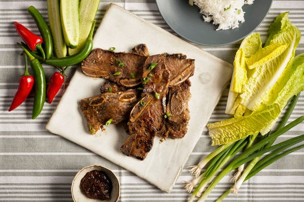

Galbi (Korean Short Ribs)

Description
This is a delicious meal with Korean style that is usually enjoyed in
restaurants. Cooking this up will be worth your time.
Ingredients
- 3 pounds short ribs, cut in ½-inch slices across the bones (flanken-style)
- ⅓ cup soy sauce
- ⅓ cup brown sugar
- ⅓ cup rice wine
- 1 tablespoon sesame oil
- 2 teaspoons black pepper
- ¼ teaspoon cayenne or gochujang
- 1 medium onion, peeled and quartered
- 8 garlic cloves, peeled
- 1 small Asian pear, peeled, cored and quartered (or use an ordinary pear or tart apple)
- 1 1-inch chunk of ginger, peeled
- 2 teaspoons sesame seeds
- Lettuce leaves
- Sliced red or green hot pepper, optional
- Ssamjang (spicy Korean soybean paste), for dipping, optional
- Steamed rice, optional
Steps
- Rinse short ribs in cold water, pat dry and place in a wide shallow bowl. In another bowl, mix together soy sauce, brown sugar, rice wine, sesame oil, black pepper and cayenne.
- Put onion, garlic, pear and ginger in the work bowl of a food processor. Grind ingredients to a smooth purée, then add to soy sauce mixture. Add sesame seeds. Thin with ¼ cup water. Pour marinade over short ribs and mix well. Cover and refrigerate for at least 2 hours, or overnight. Bring to room temperature, drain and discard marinade.
- Cook short ribs on a hot grill or under the broiler for 2 to 3 minutes per side, until nicely browned but juicy. Pile grilled meat on a platter and serve immediately with lettuce leaves on the side. Accompany with sliced hot peppers, ssamjang and steamed rice, if desired.